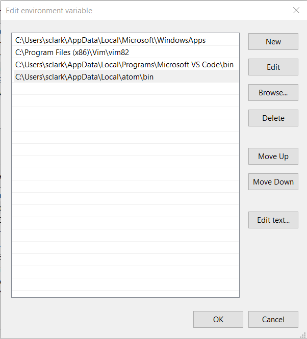

Set Up Atom
Install Atom and apm
- Install Atom
-
Verify you have apm installed:
apm help installTroubleshooting
If you get a package not found error, try restarting the Atom application.
The atom/apm packages are automatically added to your path.
For example, on Windows you should see this in your user environment variables list:
C:\Users\username\AppData\Local\atom\bin
-
Install a terminal:
apm install terminus
Install Other Useful Packages
These packages are generally useful on any project, regardless of language.
- project-manager
- file-icons
- highlight-selected
- autocomplete-paths
- copy-path
- auto-update-plus
- open-recent
- pane-layout-plus
- expose
- minimap
- pigments
- atom-beautify
- ask-stack
- clipboard-plus
- busy-signal
- hyperclick
- linter
- linter-ui
- prettier-atom
- sort-lines
- tree-view-copy-relative-path
Note:
markdown-previewis a built-in package. There is alsomarkdown-preview-plus, which I haven't tried.
apm install project-manager file-icons highlight-selected autocomplete-paths copy-path auto-update-plus open-recent pane-layout-plus expose minimap pigments atom-beautify ask-stack clipboard-plus busy-signal hyperclick linter prettier-atom sort-lines tree-view-copy-relative-path
These packages should now be located in C:\Users\username.atom\packages.
Install Project-Specific Packages
HTML & JS
apm install emmet autoclose-html less-than-slash linter-eslint jquery-snippets atom-ternjs linter linter-ui
git
apm install github git-diff git-time-machine git-plus sync-settings
GitHub
apm install github
LaTex and markdown
apm install language-latex language-todotxt latex linter-chktex markdown-table-editor
Settings and Themes
Favorite combinations
- UI theme:
apm install atom-dark - Syntax theme:
apm install base16-papercolor-light-syntax
UI themes
apm install atom-dark
apm install native-ui
Syntax themes
apm install oceanic-next
apm install base16-papercolor-light-syntax